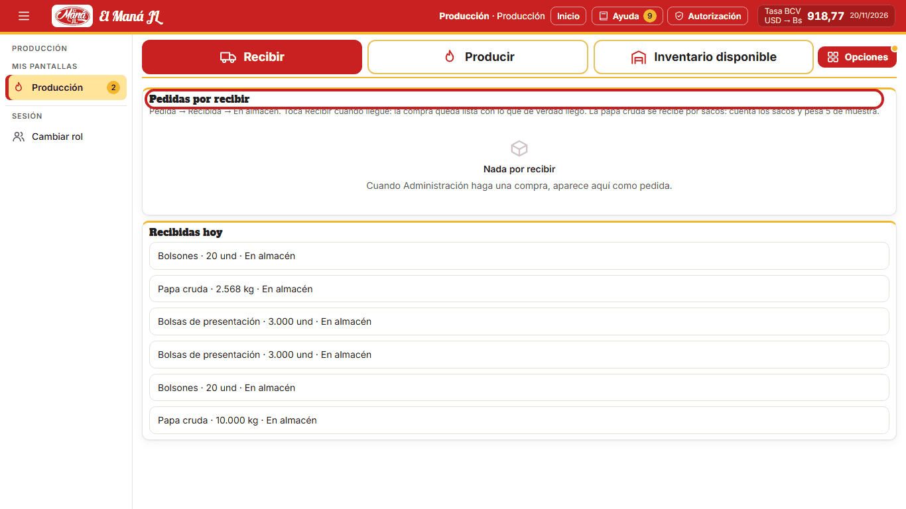
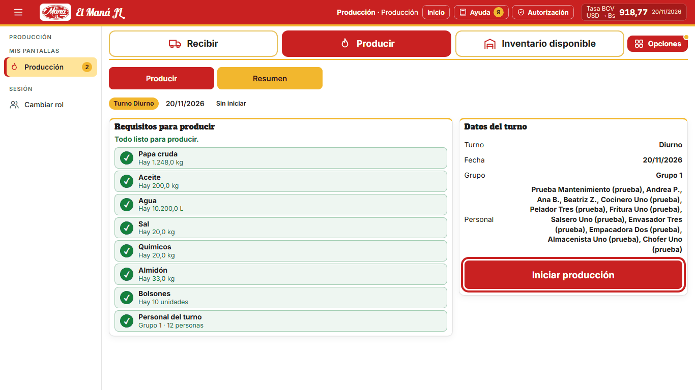
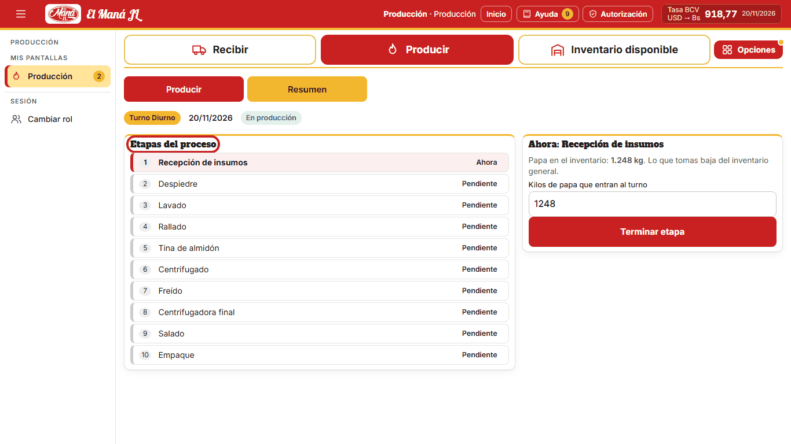
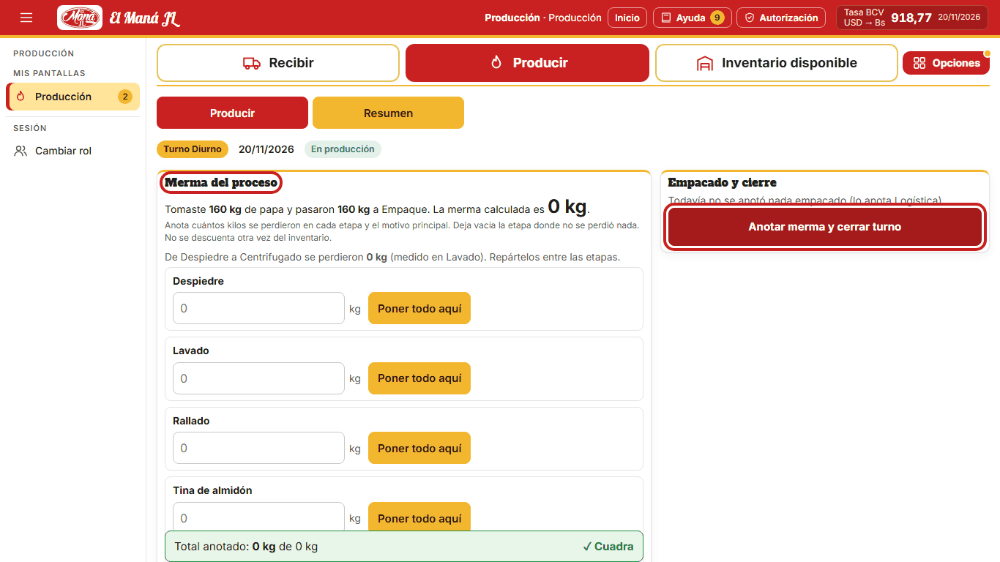
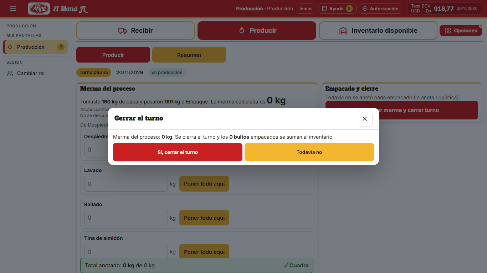
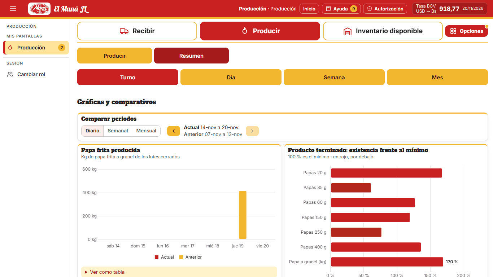
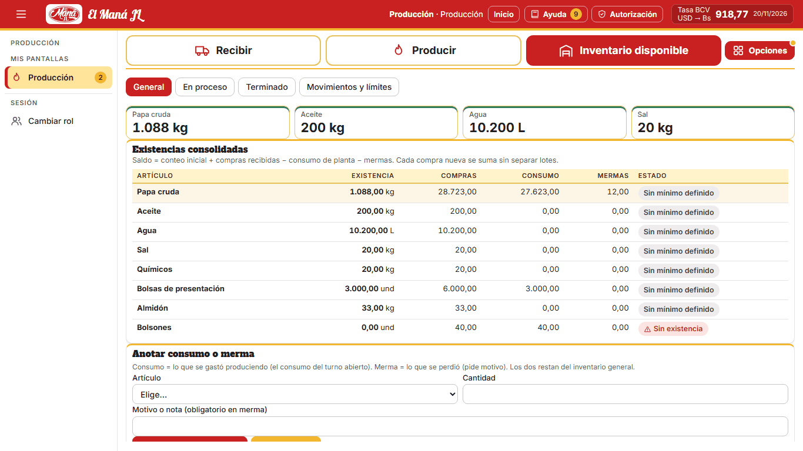
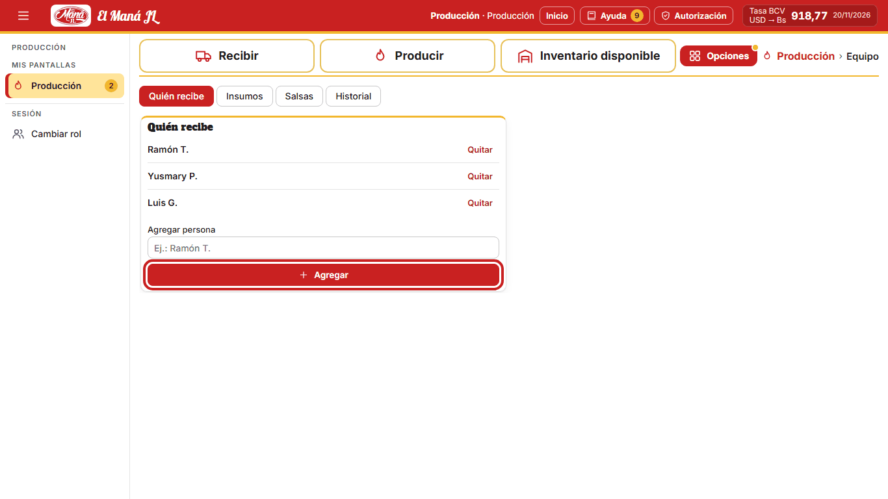
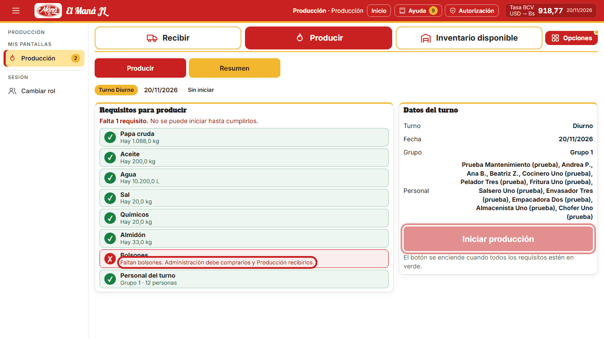

Producción recibe lo que llega (papa, insumos, bolsones), revisa que haya todo lo necesario, inicia el turno, hace las etapas de la producción en orden, anota la merma de cada etapa y cierra el turno. Lo empacado lo anota Logística.
Producción no ve precios ni costos. Las compras las hace Administración.
Mi día en 5 pasos
Entra al sistema y elige Producción.
En Recibir, recibe lo que llegó (Pedidas por recibir).
En Producir, mira que los requisitos estén en verde y pulsa Iniciar producción.
Haz las etapas una a una y pulsa Terminar etapa.
Al final anota la merma y pulsa Anotar merma y cerrar turno.
Cómo entro y elijo mi puesto
Abre el sistema.
Pulsa el botón Producción.
Se abre la pantalla Producir. Arriba tienes tres botones grandes: Recibir, Producir e Inventario disponible.
Pantalla Producir con los requisitos
Cómo recibo lo que llegó
Pulsa el botón grande Recibir.
Arriba, en Pedidas por recibir, busca la compra que llegó.
Pulsa Recibir en esa compra.
Escribe lo que llegó de cada producto.
Si llegó distinto a lo pedido, el sistema te avisa: confirma y escribe el motivo.
Pulsa el botón para guardar la recepción.

Pedidas por recibir
La papa llega por sacos: cuenta los sacos y pesa los de muestra que pide la pantalla. Los Bolsones y las Bolsas de presentación se reciben igual que cualquier compra. Más abajo ves solo lo recibido hoy. Elige Quién recibe. Si no hay nadie, agrégalo en «Cómo agrego a quien recibe».
Cómo inicio el turno
Pulsa el botón grande Producir (pestaña Producir).
Mira los requisitos: papa, aceite, agua, sal, químicos, almidón, Bolsones y el personal del turno.
Cada uno sale en verde con «Hay …» si alcanza.
Si todos están en verde, pulsa Iniciar producción.

Requisitos en verde e Iniciar producción
El turno nace al pulsar Iniciar producción (Diurno o Nocturno, según la hora). Mirar la pantalla no lo crea. Los bolsones son las bolsas grandes donde va la papa a granel. Si no hay papa recibida pero el inventario general tiene, se descuenta de ahí.
Cómo hago las etapas
En Etapas del proceso, mira la que dice Ahora (se hacen una a una, en orden): Recepción de insumos, Despiedre, Lavado, Rallado, Tina de almidón, Centrifugado, Freído, Centrifugadora final, Salado y Empaque.
En la primera, escribe los Kilos de papa que entran al turno.
Pulsa Terminar etapa.
Repite con cada etapa. Cuando la etapa esté lista, pulsa Terminar etapa otra vez.

Etapas del turno
Cómo marco quién fríe
En la etapa Freído, pulsa ¿Quién fríe en este turno?.
Elige a la persona.
Pulsa Marcar.
Cada persona marcada gana el Bono Fritura de su jornada. Si te equivocas, pulsa Quitar.
Cómo anoto la merma y cierro el turno
Cuando todo pasó a Empaque, el sistema muestra Merma del proceso y calcula la merma.
Verás una fila por etapa (Despiedre, Lavado, Rallado, Tina de almidón, Centrifugado, Freído, Centrifugadora final y Salado). En cada etapa donde se perdió papa, escribe los kilos.
Toca el motivo principal: Cáscara, Tierra, Aceite, Derrame u Otra (con Otra escribe qué fue).
Deja vacía la etapa sin pérdida. Poner todo aquí llena lo que falta del tramo.
Mira el total en vivo.
Si el total no cuadra, escribe por qué.
Pulsa Anotar merma y cerrar turno.

Merma por etapas
Aparece Cerrar el turno. Pulsa Sí, cerrar el turno (o Todavía no para volver).

Confirmar el cierre del turno
Es una sola vez por turno. La diferencia que no se explica queda como «Sin explicar». Antes de cerrar la puedes corregir con Corregir. Ya cerrado el turno, solo Gerencia la corrige.
Cómo veo el resumen del turno
En Producir, abre la pestaña Resumen.
Elige Turno, Día, Semana o Mes.
Mira el bloque Avisos: lo que requiere atención.

Resumen de Producción
Cómo veo el inventario disponible
Pulsa el botón grande Inventario disponible.
Mira la barra de cada insumo: verde si alcanza, amarillo si se acerca al mínimo, rojo si está en el mínimo o por debajo.
Entre los insumos están Bolsones y Bolsas de presentación.

Inventario disponible
Producción solo lo mira. El mínimo lo define Gerencia o Administración.
Cómo agrego a quien recibe
Pulsa Opciones y elige Equipo.
En la tarjeta Quién recibe, escribe el nombre en Agregar persona.
Pulsa Agregar.

Equipo: Quién recibe
Si algo sale mal
El botón «Iniciar producción» está apagado
Es porque falta algún requisito o no hay personal marcado.
Mira cuál requisito sale en rojo.
Si falta un insumo o los Bolsones (sale «Faltan bolsones. Administración debe comprarlos y Producción recibirlos»): avisa a Administración para que compre. Cuando llegue, recíbelo en Recibir.
Si falta personal: avisa a Recursos humanos para que arme el grupo y marque la entrada.
Cuando todo esté en verde, pulsa Iniciar producción.

Requisito en rojo y botón apagado
Ni Gerencia puede saltarse el requisito de bolsones.
La compra llegó distinta a lo pedido
En Recibir, escribe lo que de verdad llegó.
Confirma el aviso y escribe el motivo.
No me cuadra la merma
Escribe en cada etapa lo que pasó.
Si el total sigue sin cuadrar, escribe por qué en la nota.
Pulsa Anotar merma y cerrar turno: la diferencia queda como «Sin explicar».